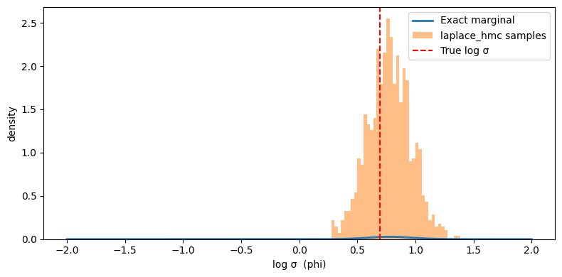

How to use Laplace-preconditioned HMC#
Hierarchical models often have the form:
phi ~ p(phi) # hyperparameters (low-dimensional)
theta ~ p(theta | phi) # latent variables (potentially large)
y ~ p(y | theta, phi) # observations
The joint posterior p(theta, phi | y) can be geometrically difficult to
sample directly: phi and theta are strongly correlated and theta is
often high-dimensional. Laplace HMC sidesteps this by marginalising out
theta analytically (via the Laplace approximation) and running HMC only on
the low-dimensional phi.
The key idea: at each leapfrog step, an L-BFGS solver finds
theta*(phi) = argmax_theta log p(theta, phi, y), and the Laplace-approximate
marginal log p̂(phi | y) is used as the HMC potential. Gradients w.r.t.
phi are computed via the implicit function theorem — the optimisation
iterations are not unrolled.
When to use it
The conditional
p(theta | phi, y)is unimodal and roughly Gaussian (the approximation is exact for Gaussian-Gaussian models).dim(phi)is small anddim(theta)is large; you want to sample onlyphi.You need posterior samples of
theta— these can be drawn cheaply from the Laplace-approximate conditional after samplingphi.
from datetime import date
import jax
import jax.numpy as jnp
import jax.scipy.stats as stats
import matplotlib.pyplot as plt
import numpy as np
import blackjax
from blackjax.mcmc.laplace_marginal import laplace_marginal_factory
from blackjax.util import run_inference_algorithm
rng_key = jax.random.key(int(date.today().strftime("%Y%m%d")))
The model#
We use a conjugate Gaussian hierarchy where the Laplace approximation is exact, so we can verify the sampler against the true marginal:
log_sigma ~ N(0, 3²) # log hyperparameter (phi), scalar
theta ~ N(0, exp(log_sigma)² · I_n) # latent vector, n-dimensional
y ~ N(theta, I_n) # observations
The exact marginal is y_i ~ N(0, sigma² + 1) independently.
n = 20 # latent dimension
# Generate data
true_log_sigma = jnp.log(jnp.array(2.0))
rng_key, data_key = jax.random.split(rng_key)
true_theta = jax.random.normal(data_key, (n,)) * jnp.exp(true_log_sigma)
rng_key, obs_key = jax.random.split(rng_key)
y_obs = true_theta + jax.random.normal(obs_key, (n,))
def log_joint(theta, log_sigma):
"""log p(theta, log_sigma, y). theta is the latent, log_sigma is phi."""
sigma = jnp.exp(log_sigma)
log_prior_phi = stats.norm.logpdf(log_sigma, 0.0, 3.0)
log_prior_theta = stats.norm.logpdf(theta, 0.0, sigma).sum()
log_lik = stats.norm.logpdf(y_obs, theta, 1.0).sum()
return log_prior_phi + log_prior_theta + log_lik
def exact_log_marginal(log_sigma):
"""Closed-form marginal p̂(log_sigma | y) for verification."""
sigma = jnp.exp(log_sigma)
log_prior_phi = stats.norm.logpdf(log_sigma, 0.0, 3.0)
var_marg = sigma**2 + 1.0
log_lik_marg = stats.norm.logpdf(y_obs, 0.0, jnp.sqrt(var_marg)).sum()
return log_prior_phi + log_lik_marg
Running blackjax.laplace_hmc#
The only change from standard blackjax.hmc is:
Pass
log_joint(theta, phi)instead of a log-density over all variables.Pass
theta_initto fix the latent dimension and provide a cold-start hint for the L-BFGS solver.
theta_init = jnp.zeros(n)
phi_init = jnp.array(0.0)
sampler = blackjax.laplace_hmc(
log_joint,
theta_init=theta_init,
step_size=0.3,
inverse_mass_matrix=jnp.ones(1),
num_integration_steps=10,
maxiter=100, # L-BFGS iterations per leapfrog step
)
rng_key, run_key = jax.random.split(rng_key)
final_state, (states, infos) = run_inference_algorithm(
run_key,
sampler,
num_steps=1_000,
initial_position=phi_init,
transform=lambda state, info: (state, info),
)
phi_samples = states.position # shape (1000,)
theta_star_samples = states.theta_star # shape (1000, n) — MAP theta at each phi
print(f"Acceptance rate: {infos.acceptance_rate.mean():.2f}")
print(f"Divergences: {infos.is_divergent.sum()}")
print(f"phi posterior mean: {phi_samples.mean():.3f} (true log_sigma={true_log_sigma:.3f})")
Acceptance rate: 0.73
Divergences: 0
phi posterior mean: 0.775 (true log_sigma=0.693)
Verify against the exact marginal#
Since our model is Gaussian, we can compare the sampled phi distribution
against the true marginal log-density:

Sampling theta given phi#
states.theta_star contains the MAP estimate of theta at each accepted
phi, not a posterior sample. To draw proper posterior samples of theta,
use laplace.sample_theta:
laplace = laplace_marginal_factory(log_joint, theta_init, maxiter=100)
rng_key, *theta_keys = jax.random.split(rng_key, len(phi_samples) + 1)
theta_keys = jnp.array(theta_keys)
# Draw one theta sample per phi sample
theta_samples = jax.vmap(laplace.sample_theta)(
jnp.array(theta_keys), phi_samples, theta_star_samples
) # shape (1000, n)
print(f"theta posterior mean (first 5): {theta_samples[:, :5].mean(axis=0)}")
theta posterior mean (first 5): [ 1.5298573 -2.1437602 2.3023572 -2.3849223 0.38228673]
Using laplace_mhmc for better ESS#
blackjax.laplace_mhmc uses a multinomial trajectory proposal instead of the
standard endpoint + Metropolis–Hastings accept/reject step. This typically
gives higher ESS per leapfrog gradient evaluation at the cost of always
accepting (no rejection):
sampler_mhmc = blackjax.laplace_mhmc(
log_joint,
theta_init=theta_init,
step_size=0.3,
inverse_mass_matrix=jnp.ones(1),
num_integration_steps=10,
maxiter=100,
)
rng_key, run_key = jax.random.split(rng_key)
_, (states_mhmc, _) = run_inference_algorithm(
run_key,
sampler_mhmc,
num_steps=1_000,
initial_position=phi_init,
transform=lambda state, info: (state, info),
)
ess_hmc = blackjax.ess(phi_samples[None])
ess_mhmc = blackjax.ess(states_mhmc.position[None])
print(f"ESS laplace_hmc: {ess_hmc:.1f}")
print(f"ESS laplace_mhmc: {ess_mhmc:.1f}")
ESS laplace_hmc: 425.7
ESS laplace_mhmc: 478.0
Practical notes#
Choosing maxiter
The L-BFGS solver runs maxiter iterations at every leapfrog step. The
warm-starting from theta_star means only a few iterations are typically
needed once the chain is mixing. Start with maxiter=30 (the default) and
increase if you see NaN log-densities or divergences.
Checking the approximation quality
The Laplace approximation is accurate when p(theta | phi, y) is
well-concentrated and unimodal. Red flags: high divergence counts, bimodal
theta_star distributions, or rhat > 1.01 on phi samples despite
seemingly good acceptance rates.
Dimension constraints
The Hessian computation is O(dim(theta)²) memory and O(dim(theta)³) per
step. Practical upper bound is dim(theta) ~ 500–1000 on a single device.
For larger latent spaces, consider sparse or structured approximations, or
switching to joint sampling with blackjax.nuts + better geometry.
Dynamic variant
blackjax.laplace_dhmc and blackjax.laplace_dmhmc use dynamic trajectory
length (NUTS-style), removing the need to hand-tune
num_integration_steps. The interface is identical; just swap the sampler
name.